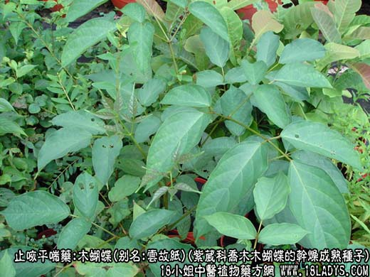
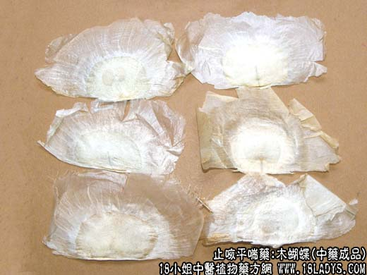
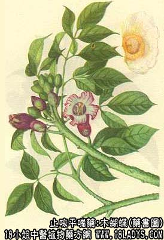

木蝴蝶为少常用中药，始载《本草纲目拾遗》。
别名：云故纸、千张纸、玉蝴蝶。
来源：为紫葳科植物乔木木蝴蝶的干燥成熟种子。
产地：主产于云南、广西、贵州，此外福建、广东、四川也有分布。
性状鉴别：种子极扁薄，呈椭圆形片状，外种皮除基部一边外，其余三边延长成膜翅状，形如蝶翅，边缘多破裂，长约5.5~8厘米，横径约4厘米，白色有绢样光泽，并有放射状纹理。膜翅部半透明。种子位于偏基部的中间，长径约1.5~2厘米，短径约0.7~1.5厘米。剥去膜皮，种仁呈黄绿色，质脆，胚根明显。气微、味苦，有豆腥味。
主要成分：含二种黄酮甙，为木蝴蝶甲素、木蝴蝶乙素。
功效与作用：润肺止咳、开音，其作用可能为镇咳、消炎。
炮制：生用。
性味：苦、平。
归经：入肺、肝经。
功能：润肺止咳，解郁平肝，收敛疮口。
主治：肺热咳嗽、肝气肋痛、胃痛、疮溃不敛。
临床应用：治干咳、声音嘶哑、咽痛喉痛痛，用于急性咽喉炎，急性气管炎而有上述症状者。单味用（以冰糖水或炖鸡蛋冲服）或配胖大海、蝉蜕等，方如木蝴蝶汤。
又可治慢性咽炎、慢性喉炎，配金银花、菊花、沙参、麦门冬等，煎水代茶，日中常服。
用量：1.5~4.5g，最常用2.4~3g。